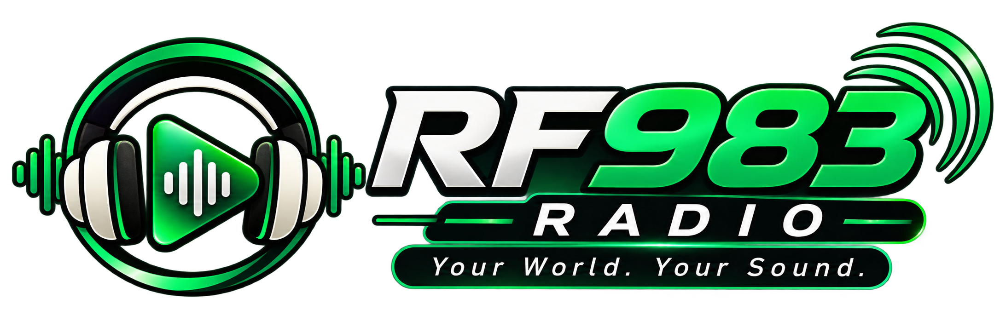

അ
Malayalam
Newsroom
News and updates presented in Malayalam, with a focus on clarity and context.
MALAYALAM ONLY ↗
INDEPENDENT RADIO · ALL DAY, EVERY DAY
One station. Many languages. A world of sound — with Malayalam news and music that travels across borders.
01 / THE SOUND STARTS HERE
A new sound is coming.
Our live broadcast is being prepared. The player will be activated when the station stream is ready.
02 / MORE THAN MUSIC
RF983 RADIO is an independent radio project built around the joy of discovery. From Malayalam news to music in languages from across India and beyond, we bring different sounds together in one place.
Whether you are here for the latest updates, a familiar song or a new voice, there is a place for you on our frequency.
Explore what’s on ↗03 / WHAT YOU’LL HEAR
A growing mix of information, music and conversations — thoughtfully brought together.
News and updates presented in Malayalam, with a focus on clarity and context.
MALAYALAM ONLY ↗A multilingual music mix spanning Malayalam, Hindi, Tamil, English and more.
MANY LANGUAGES ↗Live shows, presenters, podcasts, requests and conversations worth sharing.
STORIES THAT CONNECT ↗04 / വാർത്തകൾ
Our news desk will bring Malayalam-language updates with care, context and a commitment to reliable information.
05 / STAY IN THE LOOP
RF983 RADIO is getting ready to meet its listeners. Come back soon as we prepare our programmes and broadcast.
Back to the beginning ↑